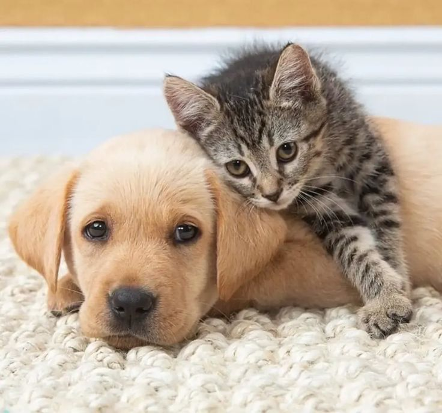

Bem vindo(a) ao MiAudote!
Aqui você encontrará informações sobre a adoção responsável de animais.
MiAudote é um site informativo a respeito da adoção responsável de animais, especialmente para a cidade de Curitiba - PR.

Bem-vindo(a) ao MiAudote, um espaço criado com carinho e dedicação para promover a adoção responsável de animais em Curitiba e ajudar a transformar vidas — tanto dos animais quanto das pessoas que os acolhem.
Meu nome é Daniel Santana, e sou a pessoa por trás deste projeto. Como amante dos animais, acredito que todos merecem um lar onde possam ser amados, cuidados e respeitados. Inspirado pela realidade de muitos animais que aguardam por uma família, decidi criar este site com o objetivo de informar, conscientizar e incentivar adoções responsáveis.
Aqui, você encontrará informações sobre:
Minha missão é simples: contribuir para um mundo onde menos animais sejam abandonados e mais lares sejam preenchidos com amor e alegria.
Agradeço por visitar este espaço e por se interessar pela causa. Juntos, podemos fazer a diferença!
Adotar um animal é muito mais do que abrir as portas de sua casa. É assumir um compromisso de cuidar, proteger e amar um ser vivo que dependerá de você para o resto da vida.
Infelizmente, muitos animais são abandonados todos os dias por falta de planejamento ou pela decisão impulsiva de adotá-los sem considerar as responsabilidades envolvidas. Por isso, a adoção responsável é tão importante: ela garante o bem-estar do animal e da família que o acolhe.
A adoção responsável é baseada na conscientização de que animais não são objetos descartáveis, mas seres vivos que precisam de cuidados e amor ao longo de toda a sua vida.
Isso significa:
Adoções impulsivas muitas vezes levam ao abandono, agravando o problema dos animais de rua.

Animais adotados de forma consciente recebem os cuidados que merecem.

Praticar e divulgar a adoção responsável ajuda a criar uma cultura de respeito aos animais.
Se você está pensando em adotar um animal de estimação, parabéns por essa decisão incrível! A adoção é uma oportunidade para oferecer um lar cheio de amor a um animal em busca de uma família.
Nesta página, explicarei o passo a passo do processo de adoção e as principais responsabilidades envolvidas, para que você esteja totalmente preparado para receber um novo amigo em sua vida.
Você pode consultar a seção Animais para Adoção para encontrar instituições confiáveis em Curitiba.
Pense no animal que melhor se adapta ao seu estilo de vida: porte, idade, nível de energia, etc.
Analise se você tem tempo, espaço e recursos para cuidar de um animal, especialmente a longo prazo.
Muitas ONGs pedem que você preencha um formulário de adoção para conhecer melhor sua rotina e se certificar de que o animal será bem cuidado.
Algumas podem agendar uma entrevista ou uma visita ao local.
Marque uma visita para interagir com o animal.
Pergunte sobre o histórico de saúde, comportamento e necessidades específicas.
Certifique-se de que sua casa está pronta: crie um espaço seguro e confortável.
Adquira itens básicos como caminha, potes de comida e água, coleira, brinquedos e ração adequada.
Assine o termo de responsabilidade: é um compromisso formal de cuidar do animal pelo resto da vida dele.
Algumas ONGs podem cobrar uma taxa simbólica para ajudar nos custos de cuidados, vacinas e castração.
A adoção responsável é um gesto de amor que salva vidas e transforma lares. Em Curitiba, existem muitas ONGs e iniciativas dedicadas a resgatar e cuidar de animais abandonados, inclusive pela própria prefeitura de Curitiba, oferecendo a eles a chance de encontrar uma família amorosa.
Nesta seção, reuni informações sobre onde e como você pode encontrar animais disponíveis para adoção.
A Rede de Proteção Animal é uma Divisão do Departamento de Pesquisa e Conservação da Fauna - SMMA da Prefeitura Municipal de Curitiba que busca promover a interface entre vários agentes públicos, da iniciativa particular e do terceiro setor, na busca de melhores condições de vida para a fauna da cidade.
Oferece serviços como castração, cadastro de animais e organiza eventos.
Link: Rede de Proteção Animal
Tomba Latas Curitiba é uma Organização Não Governamental (ONG) criada em 2010, que resgata, trata e encaminha pra adoção responsável cães e gatos das ruas de Curitiba.
Link: Tomba Latas Curitiba
Beco da Esperança | ONG de Proteção Animal é uma Organização Não Governamental (ONG) que não realiza resgate, mas promove a adoção responsável. Possui o projeto de apadrinhamento, bazar, campanhas, bingos e eventos.
Instituto Du Cão é uma Organização não governamental (ONG) que realiza feiras de adoção todos os sábados e domingos. A instituição não possui abrigo.
Link: Instituto Du Cão
A Amigo Animal, fundada em 2000 por voluntários, a partir de um trabalho já iniciado pela família Misga, é uma associação que mantém o abrigo Chácara São Francisco de Assis. Prioriza o trabalho com cães e auxilia na manutenção de outros lares temporários de gatos.
Link: Amigo Animal
A Amor Sem Raça é uma associação beneficente que promove a adoção cães e fornece a opção de apadrinhamento, no qual você pode ajudar financeiramente na manutenção do animal.
Link: Amor Sem Raça
Instituto Fica Comigo é uma organização sem fins lucrativos que tem como objetivo ajudar os animais. Possui uma clínica veterinária e cães e gatos para adoção. Também aceita apadrinhamento.
Link: Instituto Fica Comigo
Antes de adotar, é importante estar preparado para as responsabilidades de cuidar de um animal de estimação. Aqui estão algumas dicas importantes:
Além das ONGs, muitos eventos de adoção acontecem regularmente na cidade. Fique de olho em locais como: